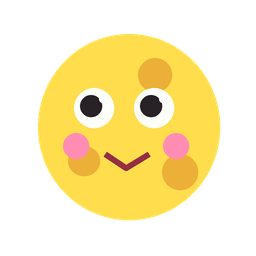

ちょっと、
深いところまで
潜ってみませんか。
はじめまして、
SAYAKAです。
グラフィックデザイナー / ディレクター
東京を拠点に、
デザインの仕事をしています。


こんなものを、
つくっています。
- ロゴ
- 名刺・ショップカード
- チラシ・フライヤー
- ポスター
- パッケージ
- 販促物・POP
- グッズ
- SNSバナー
- パンフレット
- Web・LP

15年、
デザインと向き合ってきました。
専門学校で、
講師もしています。
商工会のエキスパートバンクに、
登録されています。

これまで、
こんな方々と。
企業・ブランド
- パナソニックグループ
- ENEOS
- オリンパス
- ブリヂストン
- キヤノン
- ヤマハ
- NTTドコモ
- NTT西日本
- ベイシア
- サントリーホールディングス
- ハンナ インスツルメンツ・ジャパン
- KUROFUNE&Co
- RIRAN
アーティスト・芸能
- 三代目 J SOUL BROTHERS from EXILE TRIBE
- EXILE THE SECOND
- GENERATIONS from EXILE TRIBE
- Hey! Say! JUMP
- まるりとりゅうが
- STREET STORY
- 赤西 伶王
商品・ブランド・プロジェクト
- 17LIVE
- けものフレンズプロジェクト
自治体・団体・文化
- 千葉県
- わざをぎ
クリエイター・専門家
- 中井 精也（鉄道写真家）
釣具・アングラー
- ValkeIN
- 山田 ヒロヒト
YouTuber・インフルエンサー・配信
- ヒカル
- ハイサイ探偵団 パンチ伊志嶺
- ぱちかす超人。まろ。
- NOEZFOXX
中小企業 / 個人事業主 / 地域企業 / 店舗 / スクール / 各種インフルエンサー / アイドル など多数
※順不同・敬称略 / 掲載可能な実績の一部
Voice
- 「他とは違うって感想がもらえて、
嬉しかった。」 - 「金額以上の仕上がりで、
お得な気がした。」 - 「思い出に残るものを、
つくれた気がする。」
思い出に残るものを、
つくります。